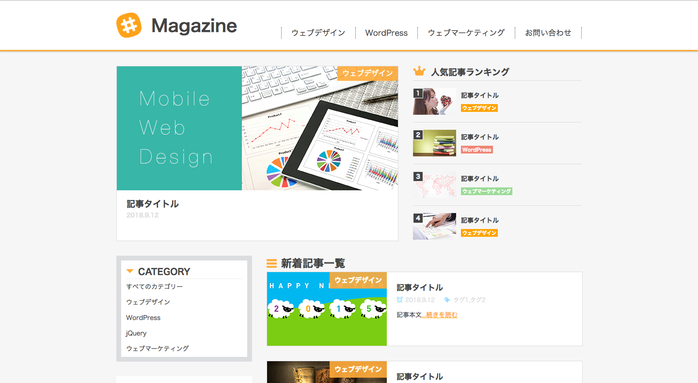
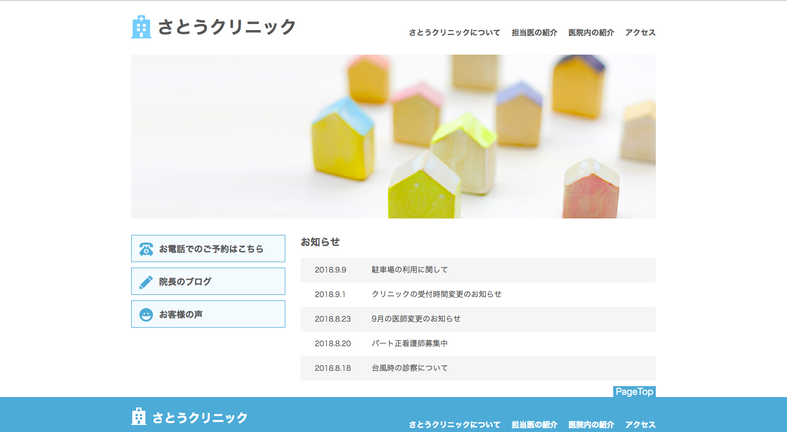

Hirogaru
Works

Magazine
マガジンサイトやメディアサイトをモデルに制作したWebページです.
会社のコーポレートサイトとしてもご利用頂けます.

Organic Salon
ヘアサロンをモデルに制作したWebページです.
サロンだけでなく、レストランやカフェなどの飲食店、
雑貨屋などの販売業のWebページとして幅広くご利用頂けます.

さとうクリニック
クリニックをモデルに制作したWebページです.
白を基調としてシンプルに仕上げることにより、清潔感を必要とするWebページにぴったりの仕上がりになります.